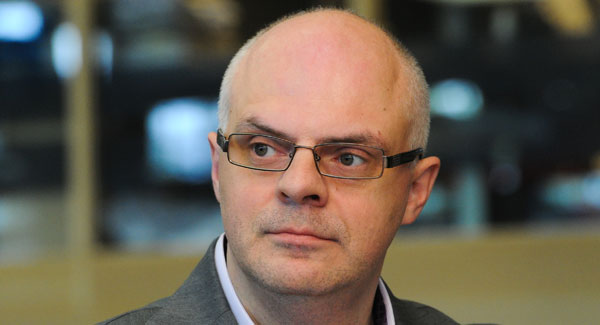
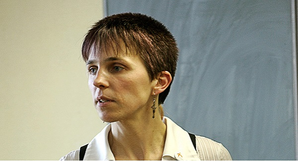
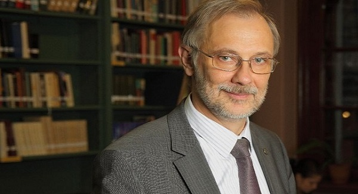
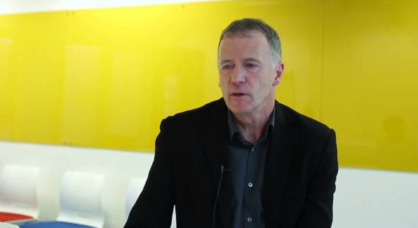
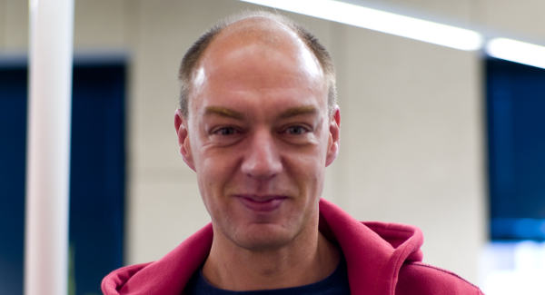
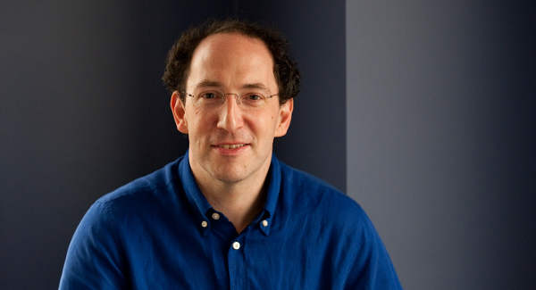
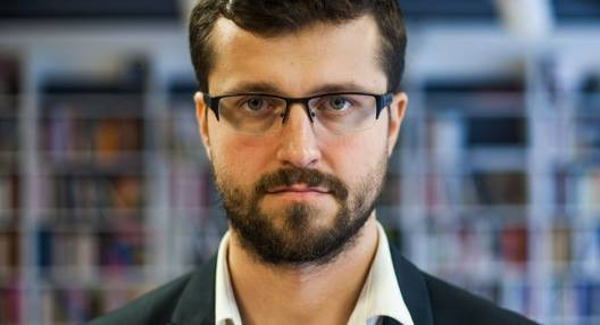
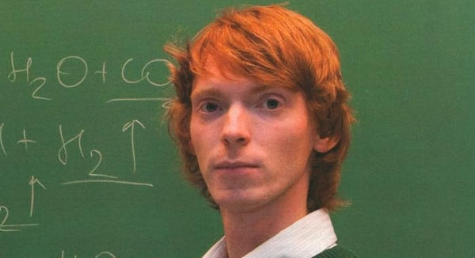

Tap on or place your mouse cursor over the speakers to display their biography details.
Skills versus Knowledge in Secondary Education

Dr Roberts Ķīlis
Keynote speech
- Leading author of Latvia 2030 long term strategy (2007-2009)
- Minister of Education and Science of Latvia (2011-2013)
- Associate professor and Head of Business Department, SSE Riga
Dr Austėja Landsbergienė
Panel discussion
- Educational consultant to the Lithuanian State
- Accreditation team member for the Council of International Schools
- Founder and CEO of "Vaikystes Sodas", "Six senses", and "Queen Morta" school

Dr Zane Olina
Panel discussion
- Former CEO of Iespējamā misija (2007-2011)
- Professor at Florida State University (2002-2007)
- Director of Children's Environmental School (1993-1998)
Student
- Student selected from Workshops Day
- This could be you!
Best Practices in Higher Education
{# #}

Prof Marcis Auzins
Panel discussion
- Rector and Professor at the University of Latvia
- Elected Member of the Latvian Academy of Sciences (1998)
- Visiting Miller Professor at University of California, Berkeley (2005)

Prof Dennis Hayes
Panel discussion
- Professor of Education at the University of Derby
- First joint president of the University and College Union (2006-2007)
- Hon. Secretary of the Standing Committee for the Education and Training of Teachers (SCETT)
Student
- Student selected from Workshops Day
- This could be you!
Does Education Foster Entrepreneurship?
Sir Paul Judge
Keynote speech
- Benefactor of the Judge Business School
- President of the Association of MBAs
- Alderman and former Sheriff of the City of London

Mr Linnar Viik
Panel discussion
- Co-owner, Member of the Board, Strategy&Investments at Mobi Solutions
- Member of the Council at Research and Development Council of Estonia
- Member of the Governing Board at European Institute of Innovation and Technology (2008-2014)
Student
- Student selected from Workshops Day
- This could be you!
Future Trends and Innovations in the field of Education

Mr Conrad Wolfram
Keynote speech
- Founder of computerbasedmath.org to fundamentally reform maths education
- European co-founder/CEO of the Wolfram group of companies

Mr Reinis Tukiss
Panel discussion
- Project Executive at LU Open Minded
- Owner of Birojnica
- Former Advisor to the Minister of Education and Science of the Republic of Latvia (2011-2013)

Mr Martin Saar
Panel discussion
- Deputy Head Teacher at Tallinn Secondary Science School
- Teacher of Chemistry and Cultural History at Gustav Adolf Grammar School
- Young and talented author and co-author of textbooks and the Estonian national chemistry syllabus
Student
- Student selected from Workshops Day
- This could be you!